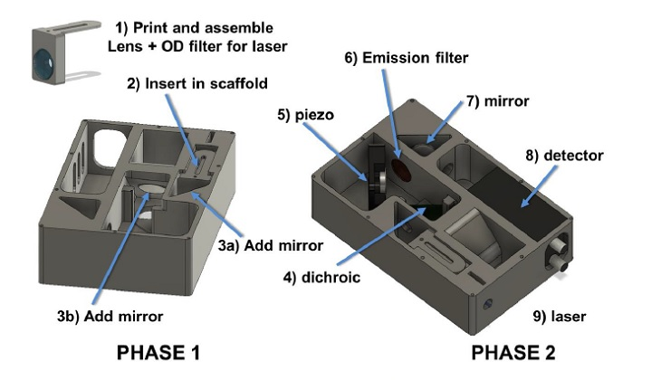

AttoBright: A single-molecule confocal system built from a 3D-printed scaffold

The AttoBright is a 10x20 cm single-molecule confocal system capable of single photon counting and fluorescence correlation spectroscopy. The scaffolding is designed to minimize the amount of optical components needed, and make those optical components easy to install with automated alignment.
A paper by James Brown, Arnaud Bauer, Mark Polinkovsky, Akshay Bhumkar, DominicHunter, Katharina Gaus, Emma Sierecki and Yann Gambin, detail the construction and capabilities of the AttoBright. Included on the AttoBright GitHub page are the CAD files for 3D printing. and various LabView and Matlab programs for acquisition and piezo-controlled alignment.
How much will the AttoBright cost to build? The GitHub also hosts a parts list for 450nm Excitation, which we've done our best to recreate with prices for each part below. The whole configuration will cost you $12k, but $9k of that is just the 40x 1.2 NA objective and the single photon detector.